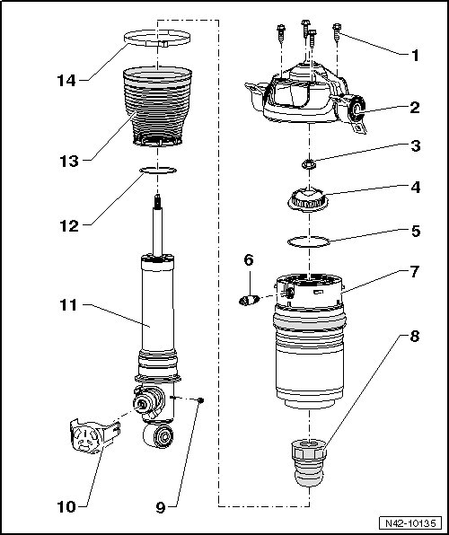

Air Spring Damper Assembly Overview
Air Spring Damper Assembly Overview

1 Bolt, 30 Nm
• Quantity: 4.
2 Mounting bracket
3 Nut, 60 Nm
• Always replace after removal.
4 Mount
5 Seal
• Always replace.
6 Residual pressure retaining valve, 10 Nm
• Observe important notes about removal and installation, refer to --> [ If residual pressure retaining valve sticks, the vehicle must be on a hoist and the wheels must rotate freely in order to replace the valve. ] Residual Pressure Retaining Valve.
• Removing and installing, refer to --> [ Residual Pressure Retaining Valve ] Residual Pressure Retaining Valve.
7 Air spring
• Follow repair notes for servicing air spring dampers, refer to --> [ Air Spring Damper, Repair Information ] Air Spring Damper, Repair Information.
When the vehicle has been driven 200,000 km, if there is damage to an air spring, it is recommended that the opposite air spring is also replaced.
8 Buffer stop
9 Nut, 7 Nm
10 Protective cap
11 Shock absorber
• Follow repair notes for servicing air spring dampers, refer to --> [ Air Spring Damper, Repair Information ] Air Spring Damper, Repair Information.
12 Seal
• Always replace.
• Grease with (N 052 150 00).
13 Protective sleeve
14 Clamp